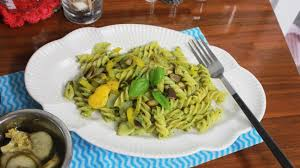

전산기초실습 11주차 실습과제
바질 페스토 파스타 레시피

재료
파스타면
바질 페스토
새우, 마늘
올리브 오일
후추, 소금
파마산 치즈 가루
만드는 방법
- 끓는 물에 소금 한 꼬집 넣고 파스타면 삶기
- 팬에 올리브 오일을 두르고 편 썬 마늘 넣어 볶기
- 마늘 향이 올라오면 새우 넣어 노릇노릇 굽기
- 새우가 익으면 삶아 둔 파스타면 넣고 볶기
- 바질 페스토 넣고 약불로 볶기
- 불을 끄고 후추와 파마산 치즈 가루 넣기
copyright©20233231 김상민 All Rights Reserved.